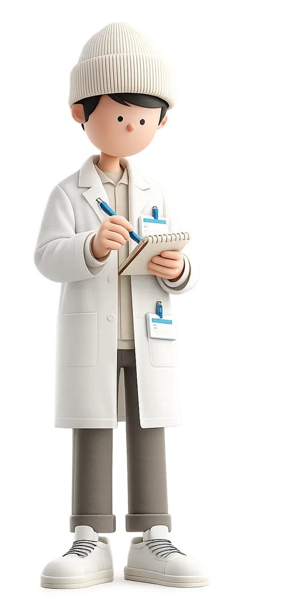

Branding · Identidad Visual · Manual de Marca
FarmalaxIA es la primera plataforma construida específicamente para el droguista independiente colombiano: inventario inteligente, crédito sin banco y marketplace entre droguerías. Diseñé la identidad visual completa — desde cero.
Brand Identity Designer
Estrategia de marca · Sistema cromático · Tipografía · Manual de marca · Mockups
Herramientas
Inventario inteligente, marketplace entre droguerías y crédito sin banco. El reto no era solo diseñar una identidad bonita — era construir una marca que el droguista sintiera suya desde el primer contacto.
Brief e Investigación
Análisis del brief del cliente, benchmarking de marcas de salud y fintech, e inmersión en el mundo del droguista independiente.
Estrategia de marca — valores, tono de voz y posicionamiento verbal
Hipótesis de dirección visual y moodboard de referentes
Sistema cromático — paleta primaria, secundaria y reglas de uso
Selección tipográfica — jerarquía de Poppins en 6 pesos
Diseño del Logotipo
Logotipo principal, isotipo, versiones cromáticas, construcción y usos correctos e incorrectos.
Manual de Marca — documentación completa del sistema en Figma y Notion
Entrega Final
Mockups de app, wallpapers de marca y archivos fuente Figma + AI
Colombia tiene más de 60.000 droguerías independientes. Ningún software existente fue diseñado para ellas: son herramientas genéricas de supermercado adaptadas a la fuerza. FarmalaxIA llegó con una solución real — pero sin una identidad que la diferenciara.
"El droguista no compra software. Compra confianza. Si la marca no le habla en su idioma, la conversación termina antes de empezar."
El Droguista
Independiente
Software hecho para supermercados, no para droguerías
Inventario congelado que pierde valor con el tiempo
Pierde descuentos de proveedores por falta de caja
Capacitaciones largas que nadie puede atender
Objetivo de diseño: FarmalaxIA debe sentirse tan cercana y directa que el droguista piense — por primera vez — que alguien construyó algo pensando en él.
Cinco trabajos reales que el droguista necesita resolver cada día y que la plataforma resuelve con IA. La identidad debía comunicar esta utilidad sin palabras técnicas.
Cuando gestiono el inventario, quiero recibir alertas predictivas de agotamiento, para nunca perder una venta por faltantes y dejar de depender de la memoria.
Cuando necesito pagar a un proveedor, quiero crédito inmediato sin trámites, para nunca perder un descuento por falta de caja.
Cuando tengo medicamentos sin rotación, quiero venderlos a otras droguerías, para recuperar el capital invertido.
Cuando atiendo a un cliente, quiero sugerencias de complementarios en tiempo real, para aumentar el ticket promedio sin esfuerzo.
Cuando recibo mercancía, quiero registrar la factura con una foto, para eliminar errores y recuperar tiempo en el día a día.
La identidad debía funcionar hacia afuera — para el droguista que adopta la plataforma — y hacia adentro — como sistema visual coherente que escala con el producto.
Si FarmalaxIA construye una identidad visual que combine la autoridad del azul profundo con la cercanía de Poppins, el droguista percibirá la plataforma como confiable y moderna — sin sentirla corporativa ni ajena a su mundo.
Azul profundo como color principal: transmite tecnología, salud y confianza sin la frialdad de los azules corporativos clásicos.
Poppins como única familia tipográfica: legibilidad en pantallas pequeñas, personalidad moderna y calidez en pesos bajos.
Logotipo reductible a isotipo: prioritario para una app móvil donde el espacio es mínimo y el reconocimiento debe ser inmediato.
Un sistema cohesivo, documentado y listo para escalar. Cada decisión visual tiene una razón estratégica: el color no es decoración, la tipografía no es capricho.
Una sola familia, seis pesos, jerarquía clara. Poppins se eligió por su legibilidad en Android de gama media y por su tono — técnico pero accesible.
